Получить навыки создания, управления и модификации логических томов LVM.
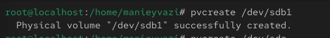
Рис. 1 — Очистка и разметка диска /dev/sdb
-.
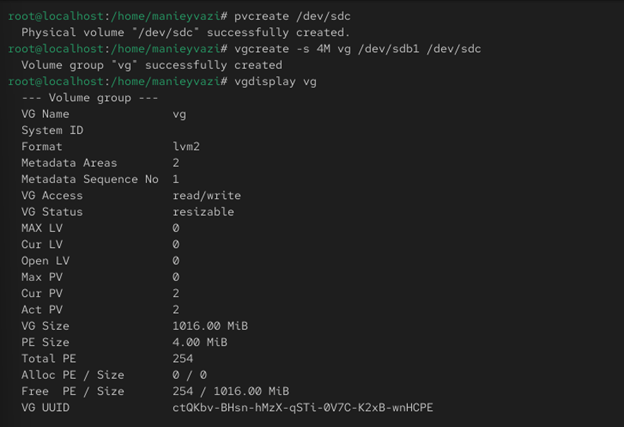
Рис. 2 — Вывод vgs
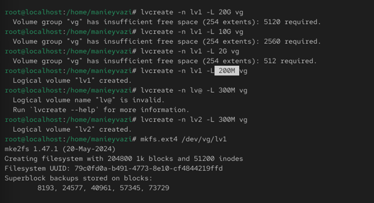
Рис. 3 — Создание файловой системы
-.
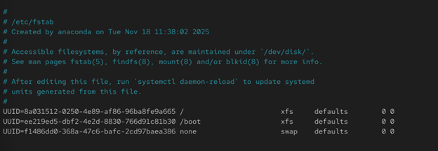
Рис. 4 — Редактирование fstab
-.
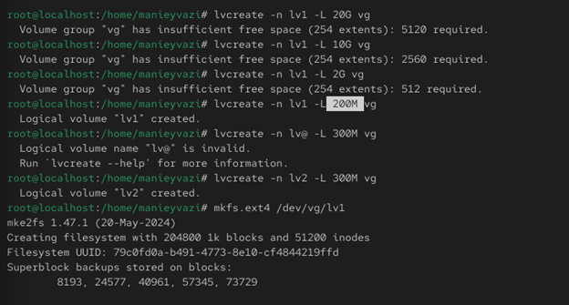
Рис. 5 — Монтирование LV
-.
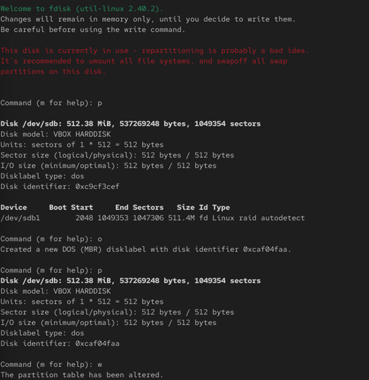
Рис. 6 — Создание /dev/sdb2
-.
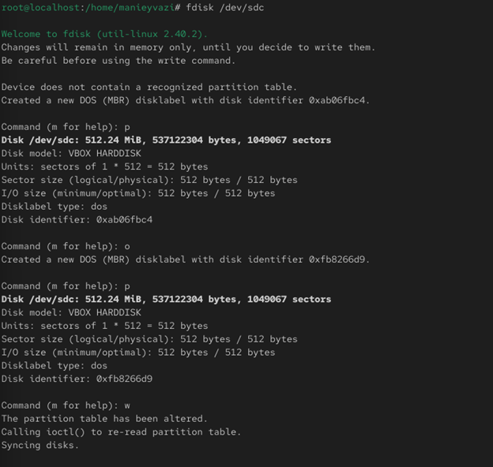
Рис. 7 — Увеличение VG
-.
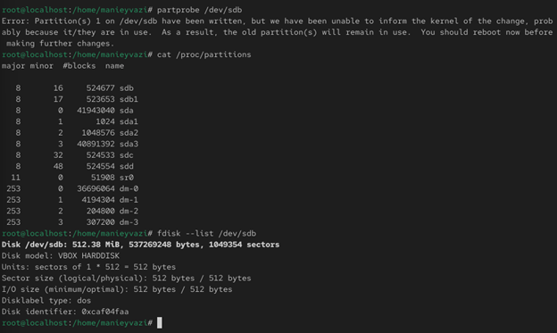
Рис. 8 — Увеличение LV
Проверка работы системы.
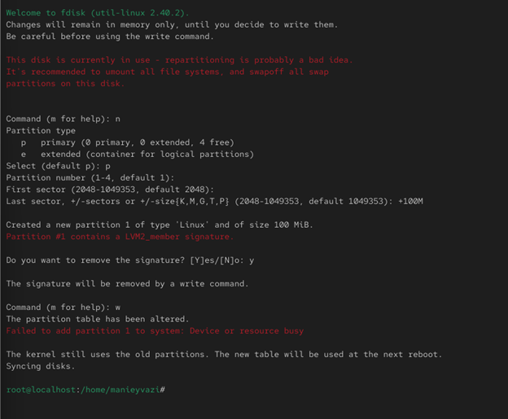
Рис. 9 — Уменьшение LV
Рис. 11 — Создание PV, VG и LV
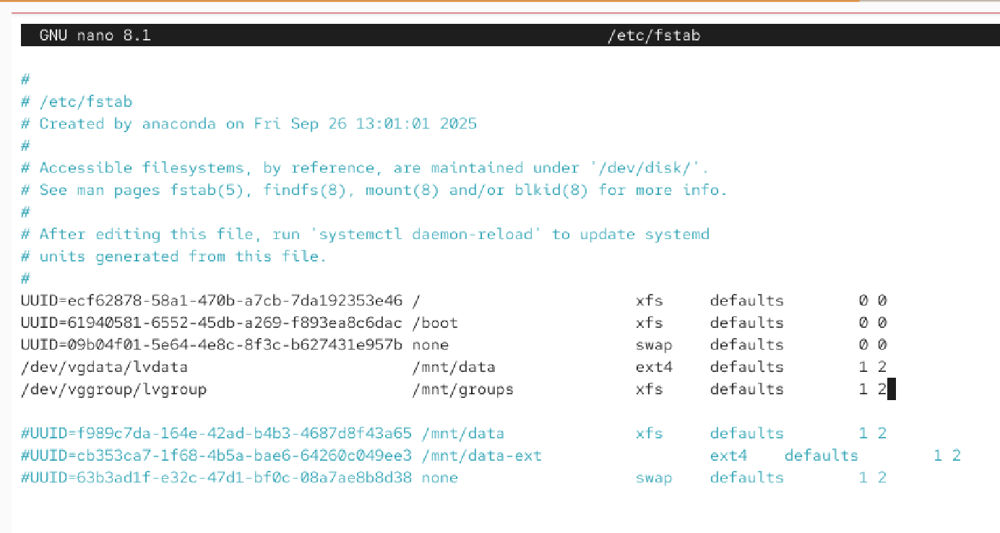
Рис. 12 — Настройка fstab
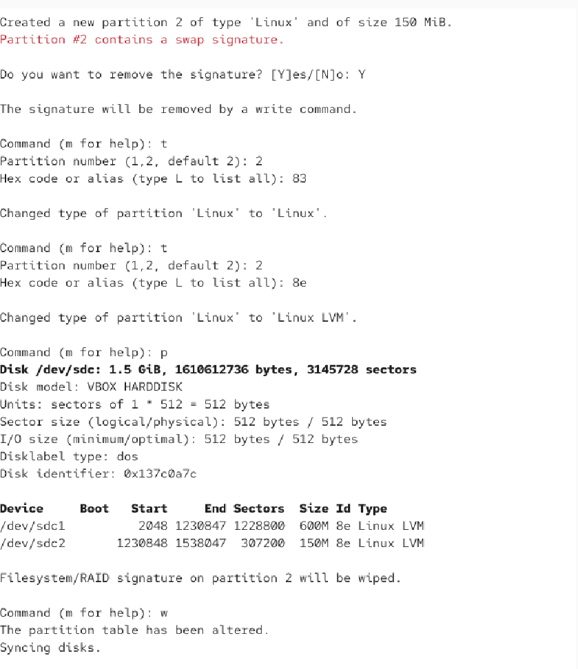
Рис. 14 — Создание /dev/sdc2
Были освоены процедуры работы с LVM: создание PV, VG, LV, монтирование, расширение и уменьшение томов. Отработаны навыки управления файловыми системами ext4 и XFS.